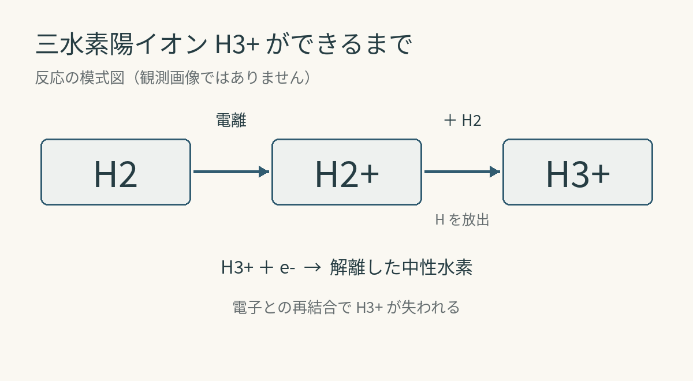

水素分子が電離すると
H₃⁺は三つの水素原子核と二つの電子からできています。水素分子H₂が高いエネルギーを持つ光子などによって電離されてH₂⁺となり、それが別のH₂と反応することでH₃⁺が生じます。生成したイオンは電子との再結合などで失われるため、その量はガスの電離状態を反映します。


図を原寸で拡大する
対称性の高いH₃⁺には永久電気双極子モーメントがなく、通常の強い電気双極子回転遷移が起こりにくい分子です。今回捉えられたのは、禁制回転遷移と呼ばれる弱いスペクトル線でした。中心星から空の上で約0.1パーセク離れた主リングの内縁を観測したところ、波長16.325マイクロメートルの線が雑音に対して32σの有意度で見つかりました。他の線と重ならない9本の遷移も検出されています。
分子が存在する高温の領域
水素分子の回転スペクトルからは、約660 Kと1700 Kの温度成分が推定されました。H₃⁺の放射はH₂の放射と空間的に対応しており、励起状態を計算すると、H₃⁺の放射のかなりの部分を高温側のガスから説明できるといいます。
著者らの計算では、水素原子核に対する電子の数の比を2×10⁻⁴とした場合、高温のH₂の電離率は、水素分子1個あたり毎秒約3×10⁻¹²となります。一般的な拡散星間雲で宇宙線によって起こる電離と比べて約2万倍です。高温の中心星から届く極端紫外線や軟X線が、ガスの遮蔽の程度によっては、この電離を引き起こせると著者らは見積もっています。
難しいのは、静的な光電離モデルではH₂の存在する領域が冷たすぎて、観測されたH₃⁺の放射を説明しにくいことです。著者らは、分子ガスが光によって加熱される境界を通って流れ出す光蒸発の過程を考えています。分子がどのような放射を受けながら、どこまで生き残って移動できるのか。今回の検出は、惑星状星雲の中で進む化学反応とガスの運動を結びつけて考える材料になります。